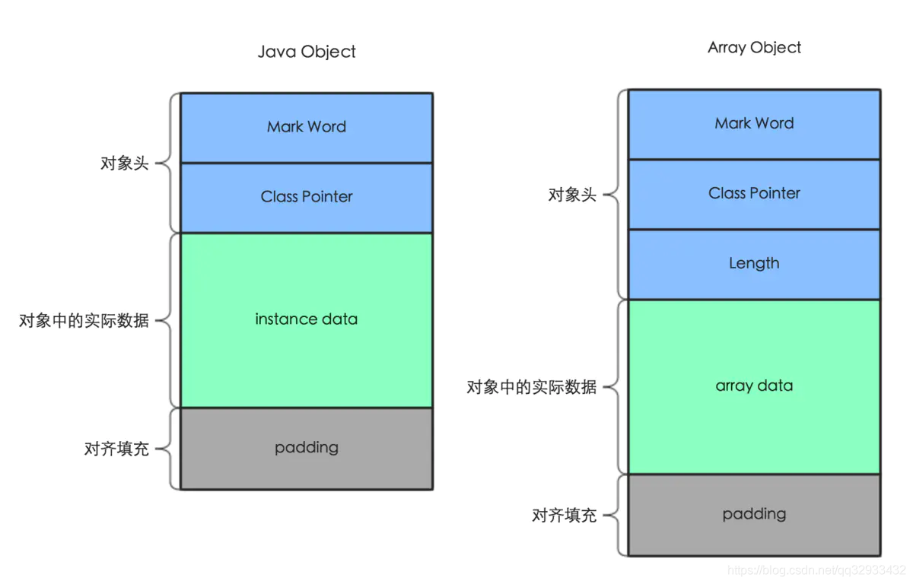
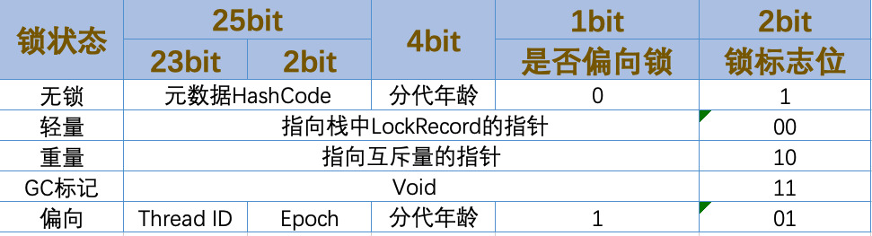
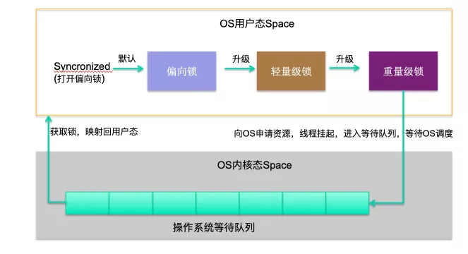
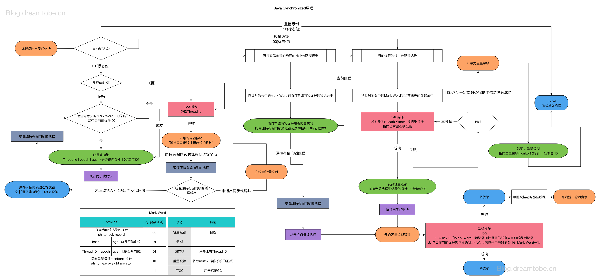
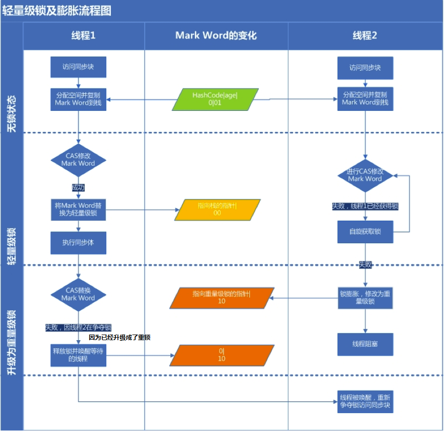
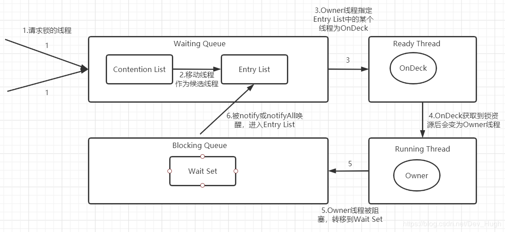

计算发展浪潮下最初的CPU从电导体-晶体管-集成电路，由最初的仙童分出的英特尔和AMD成了市场宠儿，其中英特尔创始人更是提出了经典的：
摩尔定律：集成电路上可以容纳的晶体管数目在大约每经过18个月便会增加一倍。
CPU纳米数降低的同时，性能也是有着飞速提升，有单核心迈向多核AMD锐龙Threadripper(线程撕裂者)已达到64核心128线程，也给处理能力和工作效率带来极大提升，软件语言引入多线程也成了必然趋势，那么多线程下数据安全全性问题也提上了议题，于是软件语言发明了“锁”，锁怎么用？锁高效用？
对象内存分布

在JVM中数据存储在堆和栈中，new Object()存于我们所属值的堆中，对象在内存中存储有三部分
- 对象头自身运行时数据(Mark Word)和对象指针(Class Pointer)(Length)

- Mark Word
hashCode、GC信息、锁信息三部分,markword 中最低的三位代表锁的状态。在32位系统占4字节，在64位系统中占8字节。 - Class Pointer
指向Class对象内存地址，在32位系统占4字节，在64位系统中占8字节，如果64位开启了指针压缩则4字节。 - Length
当对象为数组时数组会有保存长度。
- Mark Word
- 实例数据- Instance Data 对象真正有效的信息，所有有效字段，大小由成员变量类型决定比如：byte1字节、int4字节、long8字节等。
- 对齐填充 对象占用空间是8字节对齐，bytes数必须是8的倍数。
适用场景
| 锁 | 优点 | 缺点 | 适用场景 |
|---|---|---|---|
| 偏向锁 | 加锁和解锁不需要额外的消耗，和执行非同步方法比仅存在纳秒级的差距。 | 如果线程间存在锁竞争，会带来额外的锁撤销的消耗。 | 适用于只有一个线程访问同步块场景。 |
| 轻量级锁 | 竞争的线程不会阻塞，提高了程序的响应速度。 | 如果始终得不到锁竞争的线程使用自旋会消耗CPU。 | 追求响应时间。同步块执行速度非常快。 |
| 重量级锁 | 线程竞争不使用自旋，不会消耗CPU。 | 线程阻塞，响应时间缓慢。 | 追求吞吐量。同步块执行速度较长。 |
用户态和内核态
由于需要限制不同的程序之间的访问能力, 防止他们获取别的程序的内存数据, 或者获取外围设备的数据, 并发送到网络, CPU划分出两个权限等级 :用户态 和 内核态。
- 内核态: CPU可以访问内存所有数据, 包括外围设备, 例如硬盘, 网卡. CPU也可以将自己从一个程序切换到另一个程序
- 用户态: 只能受限的访问内存, 且不允许访问外围设备. 占用CPU的能力被剥夺, CPU资源可以被其他程序获取
锁特性概述

/ **************************Synchronized的使用方式**************************
// 1.用于代码块
synchronized (this) {}
// 2.用于对象
synchronized (object) {}
// 3.用于方法
public synchronized void test () {}
// 4.可重入
for (int i = 0; i < 100; i++) {
synchronized (this) {}
}
// **************************ReentrantLock的使用方式**************************
public void test () throw Exception {
// 1.初始化选择公平锁、非公平锁
ReentrantLock lock = new ReentrantLock(true);
// 2.可用于代码块
lock.lock();
try {
try {
// 3.支持多种加锁方式，比较灵活; 具有可重入特性
if(lock.tryLock(100, TimeUnit.MILLISECONDS)){ }
} finally {
// 4.手动释放锁
lock.unlock()
}
} finally {
lock.unlock();
}
}
Synchronized
JAVA中我们在编辑同步方法常用Synchronized关键字加锁，在JDK.6前Synchronized是重量锁，OS(操作系统)的线程在用户态和系统内核态之间切换(阻塞和唤醒)。不过随着 JDK 的升级，也在对它进行不断的优化，如今它变得不那么重了，甚至在某些场景下，它的性能反而优于轻量级锁。加了 syncronized 关键字的方法、代码块中，一次只允许一个线程进入特定代码段，从而避免多线程同时修改同一数据。
- 修饰代码块，加锁对象为互斥量
- 修饰实例方法，加锁对象为当前的实例对象
- 修饰静态方法，加锁对象为当前的类
有锁升级过程
在 JDK1.5 (含)之前， synchronized 的底层实现是重量级的，所以之前一致称呼它为"重量级锁"
在 JDK1.5 之后，对 synchronized 进行了各种优化，它变得不那么重了，实现原理就是锁升级的

CAS（Compare And Swap）
CAS(比较与交换)是一种无锁算法。在不使用锁（没有线程被阻塞）的情况下实现多线程之间的变量同步。java.util.concurrent包中的原子类就是通过CAS来实现了乐观锁。 CAS算法涉及到三个操作数：
- 需要读写的内存值 V。
- 进行比较的值 A。
- 要写入的新值 B。
更新一个变量的时候，只有当变量的预期值A和内存地址V当中的实际值相同时，才会将内存地址V对应的值修改为B（“比较+更新”整体是一个原子操作。否则不会执行任何操作。一般情况下，“更新”是一个不断重试的操作。
执行流程

偏向锁
锁不仅不存在多线程竞争，而且总是由同一线程多次获得。Mark Word中存当前持有偏向锁的线程ID，如果获取锁的线程ID与它一致就说明是同一个线程，可以直接执行，不用像轻量级锁那样执行CAS操作来加锁和解锁。 
场景一 当锁对象第一次被线程获得锁的时候
线程发现是匿名偏向状态（也就是锁对象的Mark Word没有存储线程ID），则会用CAS指令，将mark word中的thread id由0改成当前线程Id。如果成功，则代表获得了偏向锁，继续执行同步块中的代码。否则，将偏向锁撤销，升级为轻量级锁。
场景二 当获取偏向锁的线程再次进入同步块时
发现锁对象存储的线程ID就是当前线程的ID，会往当前线程的栈中添加一条Displaced Mark Word为空的Lock Record中，然后继续执行同步块的代码，因为操纵的是线程私有的栈，因此不需要用到CAS指令；由此可见偏向锁模式下，当被偏向的线程再次尝试获得锁时，仅仅进行几个简单的操作就可以了，在这种情况下，synchronized关键字带来的性能开销基本可以忽略。
场景三 当没有获得锁的线程进入同步块时
当没有获得锁的线程进入同步块时，发现当前是偏向锁状态，并且存储的是其他线程ID（也就是其他线程正在持有偏向锁），则会进入到撤销偏向锁的逻辑里，一般来说，会在safepoint中去查看偏向的线程是否还存活
- 如果线程存活且还在同步块中执行，则将锁升级为轻量级锁，原偏向的线程继续拥有锁，只不过持有的是轻量级锁，继续执行代码块，执行完之后按照轻量级锁的解锁方式进行解锁，而其他线程则进行自旋，尝试获得轻量级锁。
- 如果偏向的线程已经不存活或者不在同步块中，则将对象头的mark word改为无锁状态（unlocked）。
由此可见，偏向锁升级的时机为：当一个线程获得了偏向锁，在执行时，只要有另一个线程尝试获得偏向锁，并且当前持有偏向锁的线程还在同步块中执行，则该偏向锁就会升级成轻量级锁。
解锁
因此偏向锁的解锁很简单，其仅仅将线程的栈中的最近一条lock record的obj字段设置为null。需要注意的是，偏向锁的解锁步骤中并不会修改锁对象Mark Word中的thread id，简单的说就是锁对象处于偏向锁时，Mark Word中的thread id 可能是正在执行同步块的线程的id，也可能是上次执行完已经释放偏向锁的thread id，主要是为了上次持有偏向锁的这个线程在下次执行同步块时，判断Mark Word中的thread id相同就可以直接执行，而不用通过CAS操作去将自己的thread id设置到锁对象Mark Word中
轻量锁
重量级锁依赖于底层的操作系统的Mutex Lock来实现的，但是由于使用Mutex Lock需要将当前线程挂起并从用户态切换到内核态来执行，这种切换的代价是非常昂贵的，而在大部分时候可能并没有多线程竞争，只是这段时间是线程A执行同步块，另外一段时间是线程B来执行同步块，仅仅是多线程交替执行，并不是同时执行，也没有竞争，如果采用重量级锁效率比较低。以及在重量级锁中，没有获得锁的线程会阻塞，获得锁之后线程会被唤醒，阻塞和唤醒的操作是比较耗时间的，如果同步块的代码执行比较快，等待锁的线程可以进行先进行自旋操作（就是不释放CPU，执行一些空指令或者是几次for循环），等待获取锁，这样效率比较高。所以轻量级锁天然瞄准不存在锁竞争的场景，如果存在锁竞争但不激烈，仍然可以用自旋锁优化，自旋失败后再升级为重量级锁。
加锁
VM会为每个线程在当前线程的栈帧中创建用于存储锁记录的空间，我们称为Displaced Mark Word。如果一个线程获得锁的时候发现是轻量级锁，会把锁的Mark Word复制到自己的Displaced Mark Word里面。
然后线程尝试用CAS操作将锁的Mark Word替换为自己线程栈中拷贝的锁记录的指针。如果成功，当前线程获得锁，如果失败，表示Mark Word已经被替换成了其他线程的锁记录，说明在与其它线程竞争锁，当前线程就尝试使用自旋来获取锁。
自旋：不断尝试去获取锁，一般用循环来实现。
自旋是需要消耗CPU的，如果一直获取不到锁的话，那该线程就一直处在自旋状态，白白浪费CPU资源。
JDK采用了适应性自旋，简单来说就是线程如果自旋成功了，则下次自旋的次数会更多，如果自旋失败了，则自旋的次数就会减少。
自旋也不是一直进行下去的，如果自旋到一定程度（和JVM、操作系统相关），依然没有获取到锁，称为自旋失败，那么这个线程会阻塞。同时这个锁就会升级成重量级锁。
解锁
在释放锁时，当前线程会使用CAS操作将Displaced Mark Word的内容复制回锁的Mark Word里面。如果没有发生竞争，那么这个复制的操作会成功。如果有其他线程因为自旋多次导致轻量级锁升级成了重量级锁，那么CAS操作会失败，此时会释放锁并唤醒被阻塞的线程。
重量锁
当多个线程同时请求某个重量级锁时，重量级锁会设置几种状态用来区分请求的线程：
- Contention List：所有请求锁的线程将被首先放置到该竞争队列，我也不知道为什么网上的文章都叫它队列，其实这个队列是先进后出的，更像是栈，就是当Entry List为空时，Owner线程会直接从Contention List的队列尾部（后加入的线程中）取一个线程，让它成为OnDeck线程去竞争锁。(主要是刚来获取重量级锁的线程是回进行自旋操作来获取锁，获取不到才会进从Contention List，所以OnDeck线程主要与刚进来还在自旋，还没有进入到Contention List的线程竞争)
- Entry List：Contention List中那些有资格成为候选人的线程被移到Entry List，主要是为了减少对Contention List的并发访问，因为既会添加新线程到队尾，也会从队尾取线程。
- Wait Set：那些调用wait方法被阻塞的线程被放置到Wait Set。
- OnDeck：任何时刻最多只能有一个线程正在竞争锁，该线程称为OnDeck。
- Owner：获得锁的线程称为Owner。
- !Owner：释放锁的线程 
- 步骤1是线程在进入Contention List时阻塞等待之前，程会先尝试自旋使用CAS操作获取锁，如果获取不到就进入Contention List队列的尾部。
- 步骤2是Owner线程在解锁时，如果Entry List为空，那么会先将Contention List中队列尾部的部分线程移动到Entry List
- 步骤3是Owner线程在解锁时，如果Entry List不为空，从Entry List中取一个线程，让它成为OnDeck线程，Owner线程并不直接把锁传递给OnDeck线程，而是把锁竞争的权利交给OnDeck，OnDeck需要重新竞争锁，JVM中这种选择行为称为 “竞争切换”。（主要是与还没有进入到Contention
List，还在自旋获取重量级锁的线程竞争） - 步骤4就是OnDeck线程获取到锁，成为Owner线程进行执行。
- 步骤5就是Owner线程调用锁对象的wait（）方法进行等待，会移动到Wait Set中，并且会释放CPU资源，也同时释放锁，
- 步骤6.就是当其他线程调用锁对象的notify（）方法，之前调用wait方法等待的这个线程才会从Wait Set移动到Entry List，等待获取锁。
那synchronized实现何时使用了自旋锁？答案是在线程进入ContentionList时，也即第一步操作前。
对自旋锁周期的选择上，HotSpot认为最佳时间应是一个线程上下文切换的时间，但目前并没有做到。经过调查，目前只是通过汇编暂停了几个CPU周期，除了自旋周期选择，HotSpot还进行许多其他的自旋优化策略，具体如下：
- 如果平均负载小于CPUs则一直自旋
- 如果有超过(CPUs/2)个线程正在自旋，则后来线程直接阻塞
- 如果正在自旋的线程发现Owner发生了变化则延迟自旋时间（自旋计数）或进入阻塞
- 如果CPU处于节电模式则停止自旋
- 自旋时间的最坏情况是CPU的存储延迟（CPU A存储了一个数据，到CPU B得知这个数据直接的时间差）
- 自旋时会适当放弃线程优先级之间的差异
参考资料
巨人肩膀，见高望远，部分内容引用自以下文章